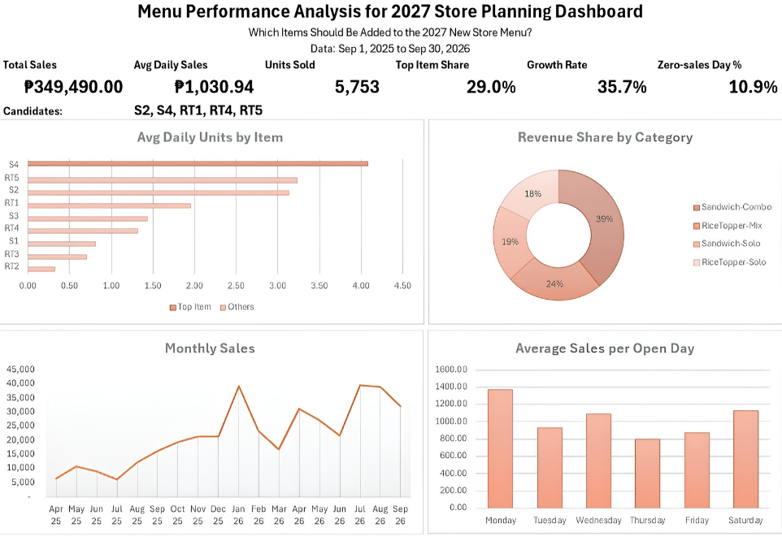

Clean records.
Clear numbers.
Hi, I'm JR, a data analyst. I use Excel, SQL and Data Visualization tools to answer business questions with clear and honest analysis.
It started with watching sports on TV. Whenever I see a stat or a ranking, I can't help asking what's behind it. After a volleyball game, I check the numbers and wonder why this/that skill department dipped or who should start next set. Now I bring that same habit to business data.
Featured project
A 3-part analysis of 13 months of daily sales to help choose items for the new store planned to open in 2027.
Data note: Figures are scaled to protect the business owner's financial information. Rankings, trends and shares reflect the real patterns.
Part 1: Excel Menu Performance Analysis
Excel (functions only)

Cleaned and checked the data, then ranked sandwiches and rice toppers on average daily units, trend and consistency. Compared add-on and overload value across items. Built a dashboard with KPIs, candidates and 4 charts.
Part 2: SQL Menu Questions
SQL (SQLite)

10 queries covering sales by category, top items, trend, consistency, zero-sale days and add-on value. Results are cross-checked against the Excel calculations.
Part 3: Interactive Dashboard
Data Studio, Google Sheets
An interactive version of the analysis with date, category and item filters.
Key Insights
- Candidates: S2, S4, RT1, RT4, and RT5 rank highest in their groups on daily units, trend, and consistency.
- S4 sells the most per day, followed by RT5 and S2.
- Sandwich-Combo is the largest category at 39% of revenue.
- Revenue peaked in Jan and Jul 2026, and recent sales per open day are up 35.7%.
Results are candidates, pending margin review, owner feedback, prep time and ingredient availability.
Key Limitations
- No cost data: Items were ranked by sales performance, not profit.
- Data period: Sales end Sep 30, 2026. Items compared from Sep 1, 2025.
- Store operations: Sundays and closures excluded. No-sale days counted as zero.
- Franchise influence: Franchise sales may affect these items. Not measured.
Skills
Analysis tools
- Excel
- SQL
- SQLite
- Google Sheets
Data visualization
- Data Studio
- Excel dashboards
Data work
- Data cleaning
- Data analysis
- Trend analysis
- Business insights
Contact
I'm open to Data, Business, and Operations Analyst roles. Feel free to reach out if you're looking for someone who can turn data into practical business decisions.